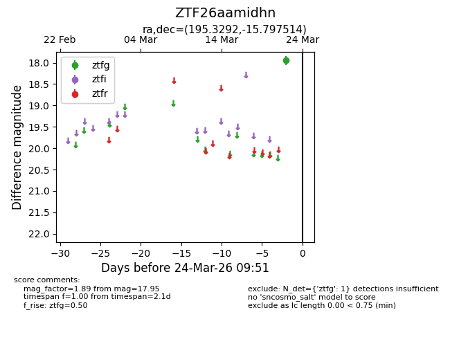
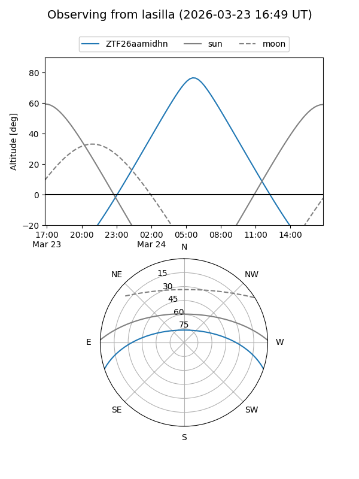
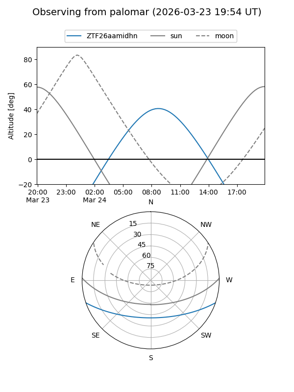

ZTF26aamidhn
Target ZTF26aamidhn at 2026-03-24 09:54
Aliases and brokers:
FINK: link
Lasair: link
ALeRCE: link
alt names
ZTF26aamidhn (ztf,fink_ztf)
Coordinates:
equatorial (ra, dec) = 195.3292,-15.79751
equatorial (HMS+DMS) = 13:01:19.00,-15:47:51.05
galactic (l, b) = (306.4179,+47.00736)
Flags:
Photometry:
last ztfg=17.95
1 ztfg detections
Lightcurve

Visibility


Additional plots